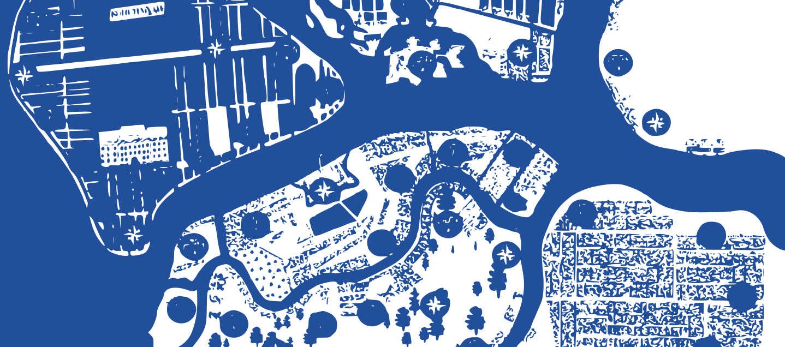

29-30
августа
августа
«Петровская ассамблея 2026» — тема площадки Государственного Эрмитажа в рамках семейного фестиваля «Открытый урок».
На встрече вы сможете узнать много нового и интересного
в эпоху Петра I с помощью игр, мастер-классов и викторин.
Эпоха Петра I (1696–1725) стала временем коренного перелома, когда Московское царство стало Российской империей. Этот период характеризовался активной модернизацией всех сфер жизни — от военного дела до внешнего облика подданных.

Настольная игра-путешествие по владениям и торговым путям петровской России.
Светские собрания и танцы по правилам, введённым Петром I для дворянского досуга.
Учимся выводить буквы гусиным пером по прописям начала XVIII века.
Разбираем слова и обороты, вошедшие в русский язык при Петре Великом.
Первые аптеки и госпитали России — медицина петровского времени.
Викторина: отделяем исторические факты о Петре I от легенд и домыслов.
Тайная символика дамских аксессуаров придворного этикета.
Мастер-класс по блюдам и застольным традициям петровского двора.
Испытание манер, этикета и знаний — по образцу петровских экзаменов для дворян.
Интерактивная игра «Наука о врачевании при Петре I» приглашает вас погрузиться в атмосферу зарождения российской медицины прямо на аллеях Летнего сада. В основе игры лежат реальные исторические хроники, методы лечения недугов XVIII века и рецепты петровского «Аптекарского огорода». Задача участников — примерить на себя роль лекарей той эпохи: исследовать территорию сада в поисках целебных трав и растений, поставить верные диагнозы и спасти пациентов. На игровых точках вас встретят актеры в образах знаменитых личностей петровского Петербурга — от соратников императора до его личного лейб-медика Роберта Эрскина, которые поделятся медицинскими тайнами и проверят ваши знания перед строгим судом Медицинской канцелярии.
